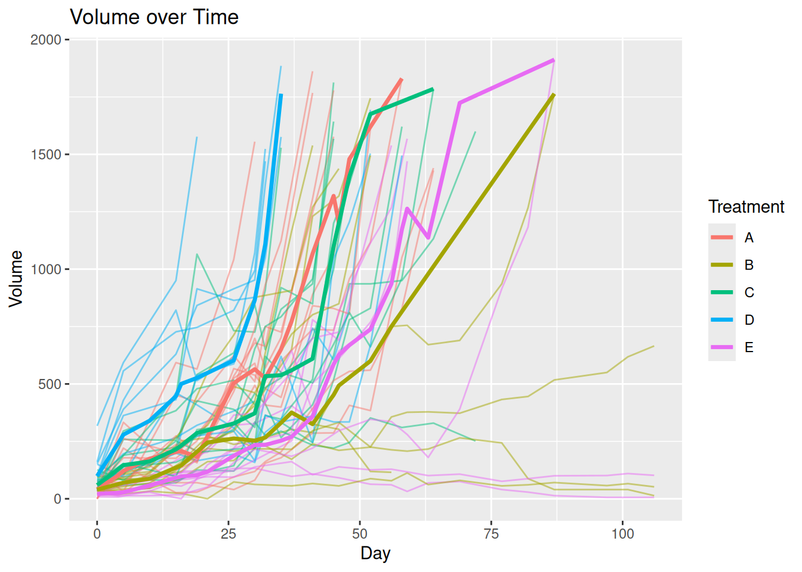
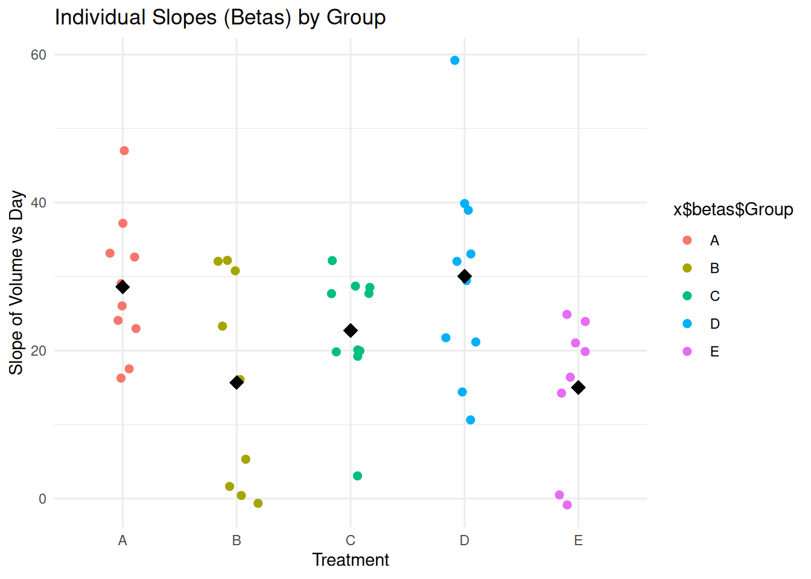

Melanoma
Code for plot_mean()
Code
plot_mean <- function(data, group, time, measure, id, stat = median, remove_na = FALSE){
data_summary <- data |>
dplyr::group_by({{group}}, {{time}}) |>
dplyr::summarise(measure = stat({{measure}}, na.rm = remove_na), .groups = "drop_last") |>
dplyr::ungroup()
if (remove_na == TRUE) {
data_full <- data |>
na.omit(data)
} else {
data_full <- data
}
ggplot2::ggplot() +
ggplot2::geom_line(data = data_full,
ggplot2::aes(x = {{time}},
y = {{measure}},
group = {{id}},
color = {{group}}),
alpha = 0.5) +
ggplot2::geom_line(data = data_summary,
ggplot2::aes(x = {{time}},
y = measure,
color = {{group}}),
linewidth = 1.2)
}Plotting the Mean vs the Median
mel2 <- tumr(melanoma2, ID, Day, Volume, Treatment)
plot_mean(melanoma2, Treatment, Day, Volume, ID, stat = mean)
plot_median(mel2)

Response feature analysis
(rfeat_mel2 <- rfeat(mel2, comparison = "both"))$anova
Df Sum Sq Mean Sq F value Pr(>F)
Group 4 1803 450.7 3.408 0.0168 *
Residuals 42 5554 132.2
---
Signif. codes: 0 '***' 0.001 '**' 0.01 '*' 0.05 '.' 0.1 ' ' 1
$tukey
Tukey multiple comparisons of means
95% family-wise confidence level
Fit: aov(formula = Beta ~ Group, data = betas)
$Group
diff lwr upr p adj
B-A -12.9067597 -27.9647734 2.1512540 0.1239895
C-A -5.8980893 -20.5544836 8.7583050 0.7807978
D-A 1.4573384 -13.1990559 16.1137327 0.9985310
E-A -13.5892260 -29.1346797 1.9562277 0.1120331
C-B 7.0086704 -8.0493433 22.0666841 0.6765864
D-B 14.3640981 -0.6939156 29.4221119 0.0679418
E-B -0.6824663 -16.6071331 15.2422006 0.9999476
D-C 7.3554277 -7.3009666 22.0118221 0.6121467
E-C -7.6911367 -23.2365904 7.8543170 0.6248441
E-D -15.0465644 -30.5920181 0.4988893 0.0619834
plot(rfeat_mel2)
Linear mixed model
(lmm_mel2 <- lmm(mel2))Linear mixed model fit by REML. t-tests use Satterthwaite's method [
lmerModLmerTest]
Formula: log1p(Volume) ~ Treatment * scale(Day) + (scale(Day) | ID)
Data: data
REML criterion at convergence: 1185
Scaled residuals:
Min 1Q Median 3Q Max
-6.8683 -0.3590 0.0569 0.4891 4.0759
Random effects:
Groups Name Variance Std.Dev. Corr
ID (Intercept) 0.5632 0.7505
scale(Day) 0.3549 0.5957 0.69
Residual 0.3221 0.5675
Number of obs: 568, groups: ID, 47
Fixed effects:
Estimate Std. Error df t value Pr(>|t|)
(Intercept) 6.27702 0.24708 40.35039 25.405 < 2e-16 ***
TreatmentB -0.76541 0.35653 39.36987 -2.147 0.03802 *
TreatmentC -0.09667 0.34770 39.66829 -0.278 0.78245
TreatmentD 0.51350 0.35839 43.64015 1.433 0.15904
TreatmentE -1.15136 0.36695 38.91498 -3.138 0.00324 **
scale(Day) 1.86064 0.20941 47.87999 8.885 1.07e-11 ***
TreatmentB:scale(Day) -0.92726 0.29623 43.34792 -3.130 0.00312 **
TreatmentC:scale(Day) -0.62389 0.29304 46.22995 -2.129 0.03861 *
TreatmentD:scale(Day) -0.58278 0.30836 54.19020 -1.890 0.06412 .
TreatmentE:scale(Day) -0.71437 0.30339 42.18104 -2.355 0.02327 *
---
Signif. codes: 0 '***' 0.001 '**' 0.01 '*' 0.05 '.' 0.1 ' ' 1
Correlation of Fixed Effects:
(Intr) TrtmnB TrtmnC TrtmnD TrtmnE scl(D) TB:(D) TC:(D) TD:(D)
TreatmentB -0.693
TreatmentC -0.711 0.492
TreatmentD -0.689 0.478 0.490
TreatmentE -0.673 0.467 0.478 0.464
scale(Day) 0.662 -0.458 -0.470 -0.456 -0.445
TrtmntB:(D) -0.468 0.662 0.332 0.322 0.315 -0.707
TrtmntC:(D) -0.473 0.328 0.658 0.326 0.318 -0.715 0.505
TrtmntD:(D) -0.449 0.311 0.319 0.680 0.303 -0.679 0.480 0.485
TrtmntE:(D) -0.457 0.316 0.324 0.315 0.659 -0.690 0.488 0.493 0.469Plot of linear mixed model
plot(lmm_mel2)Model has log1p-transformed response. Back-transforming predictions to
original response scale. Standard errors are still on the transformed
scale.[[1]]
[[2]]
Other data sets
Breast cancer
breast_meta <- tumr(breast, ID, Week, Volume, Treatment)
plot_median(breast_meta)

breast_lmm <- lmm(breast_meta)boundary (singular) fit: see help('isSingular')
summary(breast_lmm)$`overall effect of time`
1 Week.trend SE df lower.CL upper.CL
overall 0.802 0.12 26 0.557 1.05
Results are averaged over the levels of: Treatment
Degrees-of-freedom method: kenward-roger
Confidence level used: 0.95
$`slope of treatment over time`
Treatment Week.trend SE df lower.CL upper.CL
NR 0.882 0.169 25.7 0.535 1.23
VEH 0.723 0.170 26.2 0.374 1.07
Degrees-of-freedom method: kenward-roger
Confidence level used: 0.95
$`test slope differences`
contrast estimate SE df t.ratio p.value
NR - VEH 0.16 0.239 26 0.667 0.5106
Degrees-of-freedom method: kenward-roger Another melanoma
mel1 <- tumr(melanoma1, ID, Day, Volume, Treatment)
plot_median(mel1)
(mel1_rfeat <- rfeat(mel1, comparison = "both"))$anova
Df Sum Sq Mean Sq F value Pr(>F)
Group 3 4645 1548.3 35.62 3.64e-10 ***
Residuals 31 1347 43.5
---
Signif. codes: 0 '***' 0.001 '**' 0.01 '*' 0.05 '.' 0.1 ' ' 1
$tukey
Tukey multiple comparisons of means
95% family-wise confidence level
Fit: aov(formula = Beta ~ Group, data = betas)
$Group
diff lwr upr p adj
B-A -22.058493 -30.493598 -13.623388 0.0000003
C-A -4.427555 -12.862660 4.007550 0.4940635
D-A -27.682834 -36.377542 -18.988126 0.0000000
C-B 17.630938 9.195833 26.066043 0.0000179
D-B -5.624341 -14.319048 3.070367 0.3134169
D-C -23.255279 -31.949987 -14.560571 0.0000002
plot(mel1_rfeat)
(mel1_lmm <- lmm(mel1))Linear mixed model fit by REML. t-tests use Satterthwaite's method [
lmerModLmerTest]
Formula: log1p(Volume) ~ Treatment * scale(Day) + (scale(Day) | ID)
Data: data
REML criterion at convergence: 2028.9
Scaled residuals:
Min 1Q Median 3Q Max
-2.7387 -0.4428 0.0883 0.5192 3.2744
Random effects:
Groups Name Variance Std.Dev. Corr
ID (Intercept) 1.3872 1.1778
scale(Day) 0.7463 0.8639 0.97
Residual 1.4535 1.2056
Number of obs: 600, groups: ID, 35
Fixed effects:
Estimate Std. Error df t value Pr(>|t|)
(Intercept) 7.1736 0.4429 41.2795 16.197 < 2e-16 ***
TreatmentB -4.3047 0.5987 34.8445 -7.190 2.23e-08 ***
TreatmentC -0.3122 0.6309 41.8851 -0.495 0.62331
TreatmentD -5.7652 0.6146 34.3159 -9.380 5.34e-11 ***
scale(Day) 2.3725 0.3740 59.2521 6.343 3.41e-08 ***
TreatmentB:scale(Day) -1.5660 0.4815 41.9847 -3.252 0.00226 **
TreatmentC:scale(Day) -0.1146 0.5295 56.5919 -0.216 0.82944
TreatmentD:scale(Day) -3.0148 0.4904 40.1877 -6.148 2.87e-07 ***
---
Signif. codes: 0 '***' 0.001 '**' 0.01 '*' 0.05 '.' 0.1 ' ' 1
Correlation of Fixed Effects:
(Intr) TrtmnB TrtmnC TrtmnD scl(D) TB:(D) TC:(D)
TreatmentB -0.740
TreatmentC -0.702 0.519
TreatmentD -0.721 0.533 0.506
scale(Day) 0.898 -0.664 -0.630 -0.647
TrtmntB:(D) -0.697 0.895 0.489 0.502 -0.777
TrtmntC:(D) -0.634 0.469 0.901 0.457 -0.706 0.549
TrtmntD:(D) -0.685 0.507 0.481 0.897 -0.763 0.593 0.539
summary(mel1_lmm)$`overall effect of time`
1 Day.trend SE df lower.CL upper.CL
overall 0.0324 0.00466 33.9 0.023 0.0419
Results are averaged over the levels of: Treatment
Degrees-of-freedom method: kenward-roger
Confidence level used: 0.95
$`slope of treatment over time`
Treatment Day.trend SE df lower.CL upper.CL
A 0.0642 0.01010 50.5 0.04384 0.08454
B 0.0218 0.00821 22.8 0.00483 0.03881
C 0.0611 0.01020 45.6 0.04052 0.08165
D -0.0174 0.00858 21.7 -0.03518 0.00043
Degrees-of-freedom method: kenward-roger
Confidence level used: 0.95
$`test slope differences`
contrast estimate SE df t.ratio p.value
A - B 0.0424 0.0130 35.6 3.248 0.0129
A - C 0.0031 0.0144 48.0 0.215 0.9964
A - D 0.0816 0.0133 34.0 6.143 <.0001
B - C -0.0393 0.0131 33.8 -2.996 0.0250
B - D 0.0392 0.0119 22.2 3.301 0.0158
C - D 0.0785 0.0133 32.4 5.882 <.0001
Degrees-of-freedom method: kenward-roger
P value adjustment: tukey method for comparing a family of 4 estimates Prostate cancer
pros_meta <- tumr(prostate, ID, Age, BLI, Genotype)
plot_median(pros_meta)
(pros_rfeat <- rfeat(pros_meta, comparison = "both"))$anova
Df Sum Sq Mean Sq F value Pr(>F)
Group 2 6.588e+18 3.294e+18 13.71 2.14e-05 ***
Residuals 46 1.105e+19 2.403e+17
---
Signif. codes: 0 '***' 0.001 '**' 0.01 '*' 0.05 '.' 0.1 ' ' 1
$tukey
Tukey multiple comparisons of means
95% family-wise confidence level
Fit: aov(formula = Beta ~ Group, data = betas)
$Group
diff lwr upr p adj
HET-DOKO -656394790 -1063611872 -249177709 0.0008827
WT-DOKO -858422884 -1278994877 -437850891 0.0000313
WT-HET -202028094 -622600087 218543899 0.4808144
plot(pros_rfeat)
(pros_lmm <- lmm(pros_meta))Linear mixed model fit by REML. t-tests use Satterthwaite's method [
lmerModLmerTest]
Formula: log1p(BLI) ~ Genotype * scale(Age) + (scale(Age) | ID)
Data: data
REML criterion at convergence: 1409.2
Scaled residuals:
Min 1Q Median 3Q Max
-5.2048 -0.4834 0.0116 0.5532 3.2088
Random effects:
Groups Name Variance Std.Dev. Corr
ID (Intercept) 0.04699 0.2168
scale(Age) 0.08275 0.2877 0.55
Residual 0.42641 0.6530
Number of obs: 662, groups: ID, 49
Fixed effects:
Estimate Std. Error df t value Pr(>|t|)
(Intercept) 22.29482 0.08086 63.85366 275.733 < 2e-16 ***
GenotypeHET -0.99222 0.10811 49.15151 -9.178 3.12e-12 ***
GenotypeWT -1.30289 0.10940 46.67990 -11.909 9.45e-16 ***
scale(Age) 1.95835 0.10929 95.14607 17.918 < 2e-16 ***
GenotypeHET:scale(Age) -1.22415 0.14258 63.57659 -8.585 3.16e-12 ***
GenotypeWT:scale(Age) -1.42509 0.14272 57.09813 -9.985 3.90e-14 ***
---
Signif. codes: 0 '***' 0.001 '**' 0.01 '*' 0.05 '.' 0.1 ' ' 1
Correlation of Fixed Effects:
(Intr) GntHET GntyWT scl(A) GHET:(
GenotypeHET -0.748
GenotypeWT -0.739 0.553
scale(Age) 0.579 -0.433 -0.428
GntyHET:(A) -0.443 0.520 0.328 -0.767
GntypWT:(A) -0.443 0.331 0.503 -0.766 0.587
summary(pros_lmm)$`overall effect of time`
1 Age.trend SE df lower.CL upper.CL
overall 0.0946 0.005 46.4 0.0845 0.105
Results are averaged over the levels of: Genotype
Degrees-of-freedom method: kenward-roger
Confidence level used: 0.95
$`slope of treatment over time`
Genotype Age.trend SE df lower.CL upper.CL
DOKO 0.1723 0.00963 86.8 0.1532 0.1914
HET 0.0646 0.00812 36.0 0.0481 0.0811
WT 0.0469 0.00814 29.3 0.0303 0.0636
Degrees-of-freedom method: kenward-roger
Confidence level used: 0.95
$`test slope differences`
contrast estimate SE df t.ratio p.value
DOKO - HET 0.1077 0.0126 57.9 8.551 <.0001
DOKO - WT 0.1254 0.0126 51.9 9.946 <.0001
HET - WT 0.0177 0.0115 32.4 1.537 0.2873
Degrees-of-freedom method: kenward-roger
P value adjustment: tukey method for comparing a family of 3 estimates